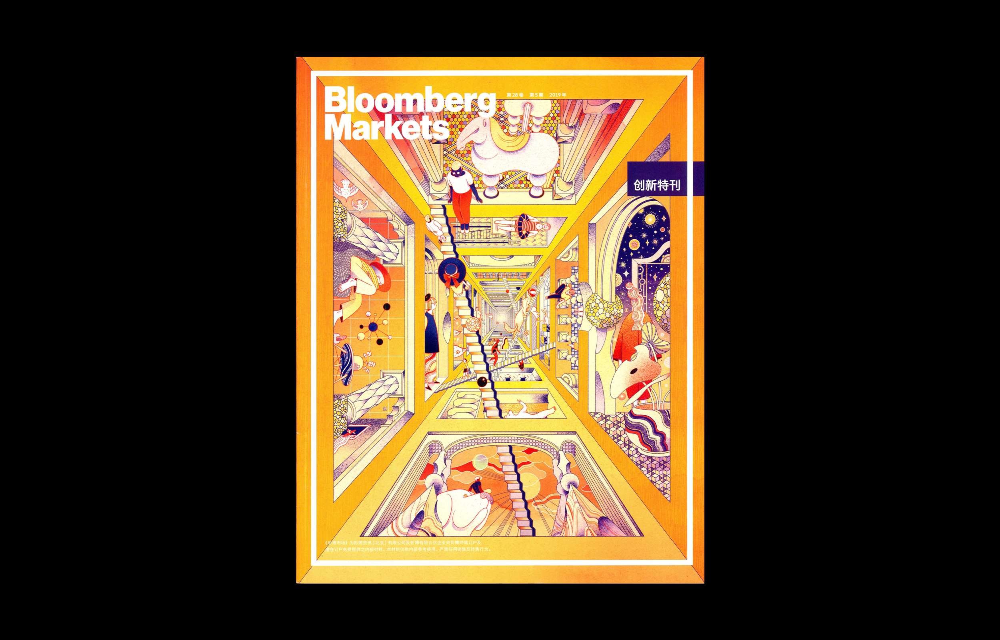

跨文化下的字体设计 | Synoptic Office 「艺术访谈」
欢迎来到木牙Make Unique Young Arts，让我们来探索跨领域文字设计～
文字是人类用表意符号记录表达信息以传之久远的方式和工具。现代文字大多是记录语言的工具。人类往往先有口头的语言后产生书面文字，很多小语种，有语言但没有文字。文字的不同体现了国家和民族的书面表达的方式和思维不同。文字使人类进入有历史记录的文明社会。--- 百度百科
Writing is a way and tool for humans to record and express information in ideographic symbols for ages. Modern writing is mostly a tool for recording language. Humans tend to have spoken language before they have written language. There are many small languages that have language but no writing. Different characters reflect different ways of written expression and thinking of countries and nations. Writing enabled man to enter a recorded civilization.--- Baidu Encyclopedia
文字从一开始出现就在人类社会占据重要的地位。随着文字的出现，作为文字载体的不同材料也随之出现，龟壳（甲骨文），石头（岩石墙壁），木头，竹简，纸张，布，金属（青铜器），沙子（土地），人体（纹身）。。。等，直到互联网的出现，传播成本降低，文字开始走向电子化。
而文字电子化使效率成倍数的提高，技术的进步伴随而来的是新型职业或者说更多工作内容的出现。文字/字体设计是我们今天要专注的方向。随着小视频时代的开始，越来越多的国家开始走向国际化。而作为购买力大国的中国，中国文字也得到了广泛的传播。中国文字/字体设计也开始走向多元化。其中最为明显的是中国文字的设计不再只是中国设计师的专利。
我们有幸邀请到了Synoptic Office来到木牙MUYA。和大家一起讨论和分享，他们工作室对于文字设计的理解和感悟。
Writing occupies an important position in human society at the beginning. With the appearance of characters, different materials as carriers of characters also appeared, turtle shells (oracle bone inscriptions), stone (rock walls), wood, bamboo slips, paper, cloth, metal (bronzes), sand (earth), human bodies (tattoos)... And so on, until the emergence of the Internet, the transmission cost is reduced, text began to go electronic.
While the efficiency of text digitization has been enhanced exponentially, the progress of technology has been accompanied by the emergence of new occupations or more work content. Text/font design is what we're going to focus on today. With the beginning of the era of small video, more and more countries are going international. As a purchasing power of China, Chinese characters have also been widely disseminated. Chinese character/font design has also begun to diversify. One of the most obvious is that the design of Chinese characters is no longer the sole preserve of Chinese designers.
We have the great opportunity to welcome the Synoptic Office to MUYA. Discuss and share with you their studio's understanding and perception of typography.
Synoptic Office 是一个跨领域的设计工作室，运转在设计，技术和教育之间。工作室的作品已经在国际平台上展出并被认可：Fast Company Design, AIGA Eye on Design, iDn, Neshan, Etapes，和 It’s Nice That。Synoptic Office曾被选中参加斯洛文尼亚卢布尔雅那建筑设计博物馆的BIO23和BIO26设计双年展，并也曾参展中国宁波艺术博物馆和布尔诺的第26届国际平面设计双年展。
Synoptic Office is a multidisciplinary design studio operating in the space between design, technology, and education. The studio’s work has been exhibited internationally and recognized by Fast Company Design, AIGA Eye on Design, iDn, Neshan, Etapes, and It’s Nice That. Synoptic Office was selected to participate in BIO23 and BIO26, the Biennial of Design at the Museum of Architecture and Design in Ljubljana, Slovenia and has exhibited at the Ningbo Museum of Art in China and the 26th International Biennial of Graphic Design in Brno.
Caspar Lam
Caspar Lam是一名设计师和作家。他拥有耶鲁大学的艺术硕士学位和德克萨斯大学奥斯汀分校的生物学和设计学位。他曾在Artstor领导设计和数字策略，Artstor是mellon资助的非营利机构，为哈佛大学、康奈尔大学和费城艺术博物馆等机构开发与元数据和出版相关的数字产品。他曾与Guggenheim博物馆、耶鲁大学建筑学院以及Li, Inc.与Ohne Titel和Vogue中国等时尚品牌合作过。作品被Adobe、AIGA和ID年度设计评审认可。
他曾在香港设计学院担任客座评论家，并在哥伦比亚大学GSAPP担任助理研究学者。他目前是帕森设计学院传播设计的项目主管和助理教授。他是AIGA NY的董事会成员。
Caspar Lam is a designer and writer. He holds an MFA from Yale and degrees in biology and design from the University of Texas at Austin. He formerly led design and digital strategy at Artstor, a Mellon-funded non-profit developing digital products related to metadata and publishing for institutions like Harvard, Cornell, and the Philadelphia Museum of Art. He has worked with the Guggenheim Museum, the Yale School of Architecture, and at Li, Inc. on fashion brands including Ohne Titel and Vogue China. Adobe, AIGA, and the ID Annual Design Review have recognized his work.
He has been a visiting critic at the Hong Kong Design Institute and served as an Adjunct Associate Research Scholar at Columbia University’s GSAPP. He currently is the Program Director and an Assistant Professor of Communication Design at Parsons School of Design. He sits on the board of directors of AIGA NY.
YuJune Park
YuJune Park是一名设计师，也是帕森斯设计学院传播设计的助理教授。2014-2017年担任项目主管，2017-2019年担任副主管。她的作品获得了AIGA、I.D.年度设计评审和艺术总监俱乐部奖的认可。她获得耶鲁大学平面设计硕士学位和罗德岛设计学院家具设计学士学位。
YuJune为包括当代艺术博物馆、Milk工作室、Davis博物馆和大都会艺术博物馆在内的多个客户工作并与他们合作，包括Base Design、Graphic Thought Facility、Rockwell Lab和Pentagram。除了教学，YuJune在Typographics, Northside Festival和AIGA/NY上广泛谈论设计教育和排版。她是TDC的董事会成员。
YuJune Park is a designer and an Assistant Professor of Communication Design at Parsons School of Design. She served as the Program Director from 2014–2017 and Associate Director from 2017–2019. Her work has been recognized by the AIGA, the I.D. Annual Design Review, and the Art Director’s Club Awards. She holds an MFA in Graphic Design from Yale University and a BFA in Furniture Design from the Rhode Island School of Design.
YuJune has worked for and collaborated with several studios including Base Design, Graphic Thought Facility, Rockwell Lab, and Pentagram for a variety of clients including the Museum of Modern Art, Milk Studios, the Davis Museum, and the Metropolitan Museum of Art. In addition to teaching, YuJune speaks widely on design education and typography, most recently at Typographics, Northside Festival, and AIGA/NY. She sits on the board of directors of the Type Directors Club.

我们相信设计是一种探究理解形式、语言和文化的方法。
We believe design is a method of inquiry for understanding form, language, and culture.


➤ 木牙MUYA: Caspar 和 YuJune 创立 synoptic Office 的初心是什么呢？在你们看来，研究型studio和商业型studio有哪些区别或者有哪些关联性呢？
What was the beginning mind of Caspar and YuJune to create the Synoptic Office? What do you think of the difference or relationship between a research based studio and commercial design studio?
Synoptic Office: 工作室的建立源于我们在研究生院发展的友谊。我们发现我们在一起工作非常愉快，并且在看待事物的方式上，我们有相似的见解。实际上，“synoptic”是指共同见证。我们尽量不考虑我们是研究型还是商业型工作室。两种类型的活动都是相关的，因为前者赋予我们能够想象和检验新想法的能力，而后者允许我们能够制定和创造实现这些想法。它们在我们的整体设计实践中都很重要。
The studio was born out of the friendship we developed during graduate school. We realized that we worked well together and had a similar way of looking at things. In fact, ‘synoptic’ means seeing together. We try not to think too much about whether we are a research-based or a commercial-based studio. Both types of activities are related because the former gives us the ability to imagine and test new ideas and the latter allows us to enact and create impact with those ideas. They are both important in our holistic practice of design.
➤ 木牙MUYA: 中文字体设计的逻辑和思想与中国的书法是极为相似的，或者说书法是字体设计的基础。Synoptic Office 是如何理解他们之间的关系和联系的呢？
The logic and concept of Chinese type design are very similar to Chinese calligraphy, or calligraphy is the basis of the typographic design. How does the Synoptic Office understand the relationships and connections between them?
Synoptic Office: 版式和字体设计一直是大量机械的字母与字符的生产形式与个人独特书写方式之间的一种协商关系。这种关系不是以一种简单的二进制为条件，而是一种循序或渐进，它可以创造出适用于不同情况的不同形式。
Typography and type design is always a negotiated relationship between a mass, mechanical form of producing letters or characters and an individual’s unique way of writing. This relationship is not a simple binary condition but a continuum or gradient that produces different types of form appropriate for different types of situations.
➤ 木牙MUYA: 随着短视频时代的开始，文本时代的消退。人们对于文字的依赖开始弱化，文本思维可能会开始改变。synoptic Office 作为一个比较专注于字体设计的设计工作室，对于文字依赖开始弱化有着怎样的理解？会因此改变一些原本的设计理念吗？
With the beginning of the popular era of the short video, the era of text faded away. People's dependence on typography is beginning to weaken, and text thinking may shift. How does the Synoptic Office (as a design studio focusing on type design）understand this situation about typography dependence is beginning to weaken? Will this change some of the original design philosophy?
Synoptic Office: 虽然目前形式的短片（例如TikTok）看起来很新，但实际上它们已成为更长久的图像制作传统的一部分。文本和图像都坚定地属于图形和通信设计的领域，所以我们不认为这些东西是激进的，而仅仅是进化。唯一更加突出的可能是在时间/动态方面。但是，请记住，从历史上看，文字通常被视为图像，因此它并不是弱化了对文字的依赖，而是从将文字视为文本到将文字视为图像的偏好转变。
While short videos in its current form (e.g. TikTok) seem new, they are actually part of a longer tradition of image-making. Both text and image are firmly within the domain of graphic and communication design, so we do not see these things as radical but merely evolutionary. The only thing that is maybe more prominent is the time/motion aspect. However, remember that historically, type is often treated as image so it is not so much a weakening dependence on type but a shifting preference from seeing type as text to seeing type as image.

➤ 木牙MUYA: 从观看者角度看来，无衬线字体比衬线字体更具现代感，在Synoptic Office的“重组想象”项目和“中文字库收录”项目中都更加侧重于对衬线字体的探索，请问Synoptic Office又是如何看待字体风格中视觉上不同年代的差异感的呢？
From the viewer's point of view, The sans-serif font looks modern than the serif font. The Synoptic Office’s “Ming Romantic: Collected and Bound” Project and “The Chinese Type Archive” project are both focused on exploring the serif fonts more. How does the Synoptic Office look at the difference between both types of font in varying ages?
Synoptic Office: 我们不太确定现代性是否存在，因为它很容易陷入基于风格来评估产品（作品）的谬论。当我们看字体外形的时候，不管是字体还是平面设计，我们感兴趣的是什么形式它最早存在，然后那些形式是如何基于适用于它们的规则和条件而改变的。生物进化就是一个很好的例子。我们可能会认为有翅膀的会飞的鸟比之前那些飞得不好的生物更“现代”。但也有一些不会飞的鸟类，比如企鹅、秧鸡和灭绝的渡渡鸟，它们已经失去了飞翔的能力。这些同样是“现代”的鸟类，但是由于它们所处的环境不同，它们采取了不同的形式。当我们开始通过这个镜头来看待设计和打字时，我们突然可以看到更广阔的东西。
We’re not so sure that modernity has a look because that would easily fall into the fallacy of evaluating artifacts based on style. When we look at forms, whether it is type or graphic design, we are interested in what forms existed first and then how those forms changed based on rules and conditions applied to them. Biological evolution is a really good example. We might think that a flying bird with wings is more ‘modern’ than the creatures that came before it which didn’t fly so well. But there are also flightless birds like penguins, crakes, and the extinct dodo which lost the ability to fly. These are equally ‘modern’ birds but they took a different form because of the conditions imposed on them. When we begin to view design and type through this lens, we suddenly are able to see more expansively.
➤ 木牙MUYA: 文字在书籍设计中和空间设计中在叙事性上存在哪些不同呢？如何在一个空间中打破平面思维进行关于文字的展示及陈列的呢？
What are the narrative differences between typography design in book and space? How to break the 2D graphic thinking in a space about the exhibit and display of typography?
Synoptic Office: 我们认为这又回到了把文字看作图像而不是把文字看作文本。在一本书中，文字往往被视为文本，而在一个环境中，文字往往被视为图像。当然，这不是一个非此即彼的情况，而是我们在空间中处理文字的方式和管理良好架构设置的文本可能会遵循不同的规则。
We think this goes back to seeing type as image versus seeing type as text. In a book, type tends to be viewed as text while in an environment, type tends to be seen as an image. This is, of course, not an either-or condition, but it means that the way we treat type in space may follow different rules than those that govern a well-set text.

➤ 木牙MUYA: 就平面来说，字体的设计分国家吗？如何理解跨文化文字设计？谁又能够设计他国字体？
As far as graphic design, will typeface/letterform design be differentiated by country? How to understand cross-cultural character design? Who can design another country's font?
Synoptic Office: 国家是有分的，但很多时候不足以分类和谈论字体和字体形式。当人们一生中在不同的地方学习、生活和工作时，这种情况比以往任何时候都更加明显。Jing Tsu’s/石静远-（耶鲁大学东亚文学系教授）的文学治理是一个很有用的概念。任何语言都有许多涉众(可能不止一个人这么想)与之有着不同的关系，这也可以应用到文字设计中。
Countries are useful but many times inadequate groupings for classifying and talking about typefaces and letterforms. This is the case now more than ever when people learn, live, and work in different places throughout their lives. A useful concept to talk about this is Jing Tsu’s literary governance. There are many stakeholders (more than one might think) with different relationships to any language, and this can be applied to type design as well.


➤ 木牙MUYA: 对于DIY（Do it yourself）和 DIY （Design it yourself） Synoptic Office 是如何理解这两个词与设计之间的关系？
How does the Synoptic Office understand the relationship between these two DIY "Do It Yourself" and "Design it Yourself" with Design?
Synoptic Office: 我们看不出这两件事有什么区别。
We don’t see much difference between these two DIYs.
➤ 木牙MUYA: 字体设计无论是哪个国家的文字，都涉及了太多的细节，但是印刷与版式设计的历史在设计中占据着重要地位，请问synoptic office 有什么书籍可以推荐给我们当下对于字体与版式设计感兴趣的学生呢？
Typography, no matter what country it is, involves a lot of detail, but the history of printing and typography is very important in its design. What book the Synoptic Office would recommend to students who are currently interested in typography?
Synoptic Office: Jost Hochuli’s Detail in Typography
➤ 木牙MUYA: Synoptic Office认为你们的行业正在向何处移动？5年？10年？你们一天都在做着什么样的工作？
Where does the Synoptic Office think about the direction of your industry is moving? In five years? Ten years? What kind of work has Caspar and YuJune been doing all day?
Synoptic Office: 总的来说，设计一直受制于技术和我们交流媒介的变化。我们认为将会有一个加速的趋势在动态图形方面(这已经发生)和新的数字界面形式。然而，这并不意味着实体对象会消失。事实上，这正是我们在当前项目中所专注的:数字虚拟状态和物理实体状态之间的关系。
Design in general has always been subject to shifts in technology and the mediums in which we communicate. We think there will be an acceleration towards motion graphics (which is already occurring) as well new forms of digital interfaces. This, however, doesn’t mean that physical objects will go away. In fact, this is what we are preoccupied with in our current projects: the relationship between the digital and the physical.

✯ Which inspire your works most ✯
“Learning through making”
✤ Synoptic Office邮箱（Contact Email NY/HK)：info@synopticoffice.com
✤ Synoptic office网站（Synoptic Office Website)
✤ INS(instagram): Synoptic Office
木牙微信订阅号